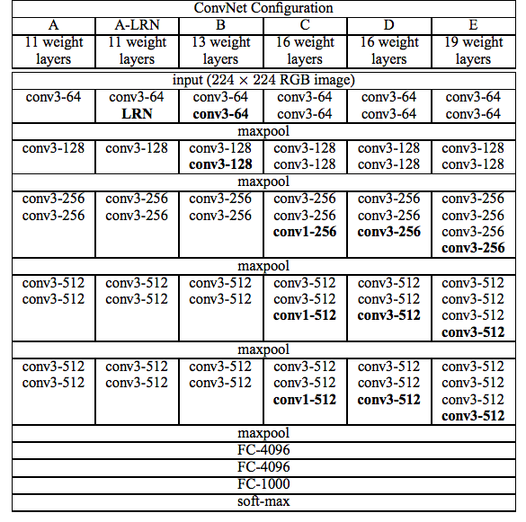

论文：Very Deep Convolutional Networks for Large-Scale Image Recognition
作者：Karen Simonyan， Andrew Zisserman
VGG Net 是 ILSVRC2014 定位项目的第一名和分类项目的第二名，在top-5上的错误率为7.5%，通过堆叠小型的3x3卷积和2x2的池化核，成功构建了16和19层的网络，证明增加网络的深度能够提高模型的性能。
1. 模型结构
VGG 由 5 段卷积层，3 层全连接和一个softmax层构成，每段卷积内是多个3x3卷积串联，每段后面都有一个2x2的max-pooling，所有隐藏层的激活函数都是 ReLU。
1.1 多个小卷积核比单个大卷积核性能好
VGG 没有采用AlexNet中的 7x7 大卷积核和3x3的大池化核，而是用了3x3的小卷积核和2x2的小池化核，通过降低卷积核的大小，增加卷积核层数来达到同样的性能。
两个3x3的卷积层串联相当于一个5x5的卷积层，三个3x3的卷积层串联相当于1个7x7的卷积层，也就是说3个3x3的卷积层的感受野大小相当于1个7x7的卷积层，但3个3x3的卷积层的参数量只有7x7的一半左右，而且前者有3个非线性操作，而后者只有1个非线性操作，所以前者对特征的学习能力更强。
网络层数的增加不会带来参数量的爆炸，因为参数量主要集中在最后3个全连接层中：
|网络|A, A-LRN| B | C | D (VGG16) | E (VGG19) |
|—-|—-|—-|—-|—-|—-|
|参数量（millions）|133|133|134|138|144|
1.2 1x1卷积层
论文用1x1的卷积层来增加线性变换，输出的通道数量没变。作者实验发现1x1的卷积也很有效，但没有3x3效果好，因为3x3可以学到更大的空间特征。
1x1卷积层作用：
- 用来提取特征，每张图片的大小不变，而是把多个通道的特征融合在一起，输出更大的通道或较小的通道；
- 代替全连接层，可以适应各种尺寸的图片。
- 增加线性变换，输出的通道数量不变（VGG）
1.3 LRN 层没有性能提升
AlexNet中用的Local response normalization 没有带来性能的提升，所以VGG其他网络中没有 LRN了。
2. VGGNet 变种
常用的是VGG16 和 VGG19:

3. 实现细节
- 为加快收敛速度，作者在训练时先训练最简单的A，再用A网络的权重初始化后面的模型。
- 在 FC 层中用了dropout，防止过拟合。